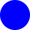
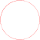
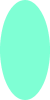
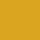
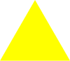
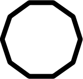

Basic Shapes¶
Most shapes have filled and outlined versions and are created by using the apply() method of a convenience object. In other words, to create a shape, you use code that looks like ShapeFilled(...) or ShapeOutlined(...) for some Shape.
The first argument for a filled shape is always a Paint. Currently, the only kind of Paint available is a Color. (Hopefully this will be enhanced later to allow for patterns and gradients.) Unsurprisingly, this argument represents the color in which the shape will be filled.
We explain more about Colors later, but for right now, know that you can use all of the HTML color names by writing Color.Name. If you just have to know all of the possible colors, go to the Scaladoc API and click on the Color object to see the complete list. Or just keep reading and you’ll see several in the examples below.
The first argument to an outlined shape is either a Paint or a Pen. By default, all outlines are drawn so that they appear exactly one pixel wide, no matter how large or small you magnify the image. If you’d like a beefier line, create a Pen(paint, width), where paint is the pen’s color and width is how wide the line will appear in pixels.
Sizes are always expressed in pixels. Since the sizes are Doubles, fractional pixels are allowed, but they’ll be fit into the pixels of your display device, so they might do something different than you expect.
Curves¶
There are four basic curvy shapes: circles and ellipses, filled and outlined.
Circles¶
CircleFilled(paint: Paint, radius: Double): Image
CircleOutlined(paint: Paint, radius: Double): Image
CircleOutlined(pen: Pen, radius: Double): Image
For circles, the two required arguments are a Paint or Pen and the size of the radius. (In the examples that follow, I’m going to show you the code you’d use to create an Image and the image that would result. Remember that if you actually want to see the image, you’ll have to call its .display() method.)
scala> CircleFilled(Color.Blue, 30)

scala> CircleOutlined(Color.Red, 25)

Ellipses¶
EllipseFilled(paint: Paint, width: Double, height: Double): Image
EllipseOutlined(paint: Paint, width: Double, height: Double): Image
EllipseOutlined(pen: Pen, width: Double, height: Double): Image
For ellipses, there are three required arguments, the color, the width, and the height. Note that these are the total width and height, so a circle with radius 30 would have a width and height of 60.
scala> EllipseFilled(Color.Aquamarine, 50, 100)

scala> EllipseOutlined(Pen(Color.Cyan, 5), 200, 25)
Squares, Rectangles, and Regular Polygons¶
Squares, rectangles, and regular polygons get special treatment, and they’re very similar to circles and ellipses.
Squares¶
SquareFilled(paint: Paint, side: Double): Image
SquareOutlined(paint: Paint, side: Double): Image
SquareOutlined(pen: Pen, side: Double): Image
The second argument to SquareFilled or SquareOutlined is the square’s side length.
scala> SquareFilled(Color.Goldenrod, 40)

scala> SquareOutlined(Pen(Color.Purple, 3), 60)
Rectangles¶
RectangleFilled(paint: Paint, width: Double, height: Double): Image
RectangleOutlined(paint: Paint, width: Double, height: Double): Image
RectangleOutlined(pen: Pen, width: Double, height: Double): Image
The second and third arguments to RectangleFilled and RectangleOutlined are the width and height of the rectangles.
scala> RectangleFilled(Color.Orange, 50, 60)
scala> RectangleOutlined(Pen(Color.YellowGreen, 3), 20, 100)
RegularPolygons¶
RegularPolygonFilled(paint: Paint, sideLength: Double, numSides: Double): Image
RegularPolygonOutlined(paint: Paint, sideLength: Double, numSides: Double): Image
RegularPolygonOutlined(pen: Pen, sideLength: Double, numSides: Double): Image
The second and third arguments of RegularPolygonFilled and RegularPolygonOutlined are the length of each side and the number of sides. The polygon is situated so that the bottom edge is horizontal.
scala> RegularPolygonFilled(Color.Yellow, 100, 3)

scala> RegularPolygonOutlined(Pen(Color.Black, 10), 50, 10)

These are all the basic shapes. But we’ve only scratched the surface of what the library can do. In the next chapter, we talk about text.